苏州工业园区总体规划2012-2030
苏州工业园区总体规划布局图
注：原图可参考官网
- 苏州工业园区总体规划2012-2030_04空间结构优化图
- 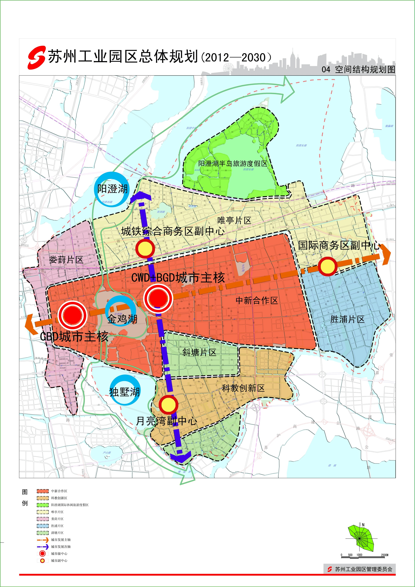
- 苏州工业园区总体规划2012-2030_12空间景观优化图
- 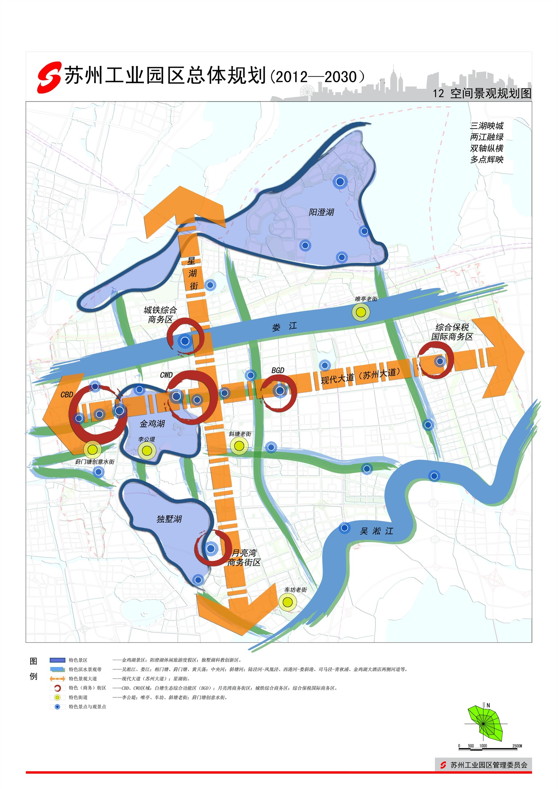
- 苏州工业园区总体规划2012-2030_05远期土地利用规划图

- 展厅都有展示墙
- 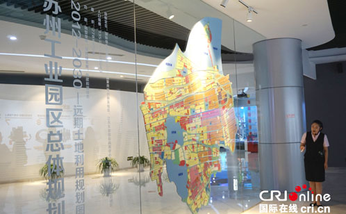
- 展厅都有展示墙
- 苏州工业园区总体规划2012-2030_07综合交通规划图
- 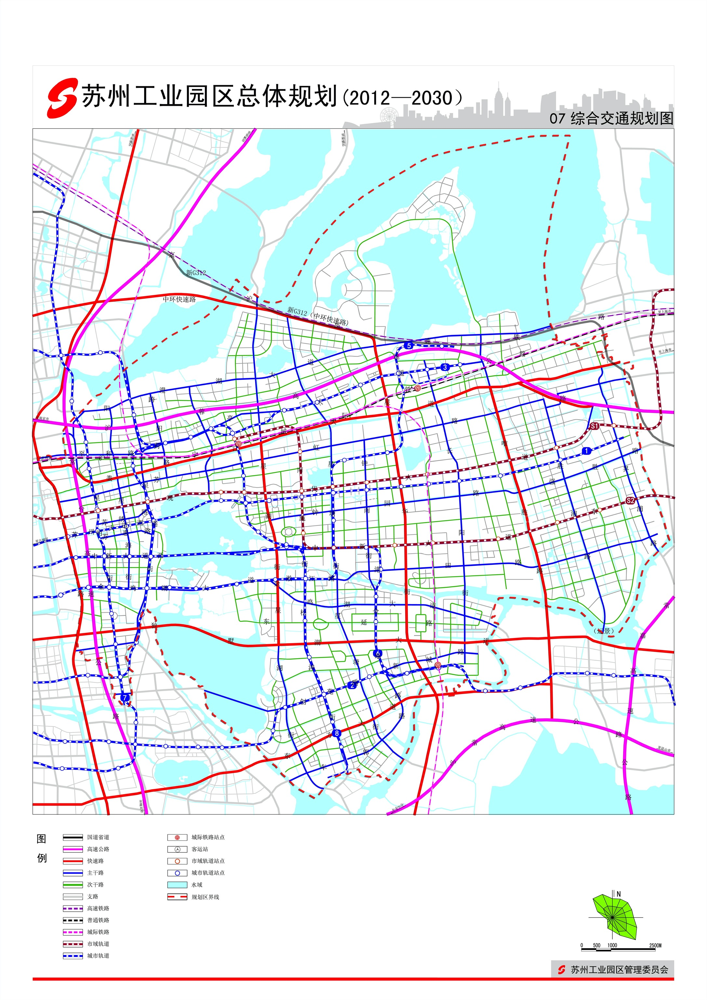
其他的图：
- 存量挖掘相关示意
- 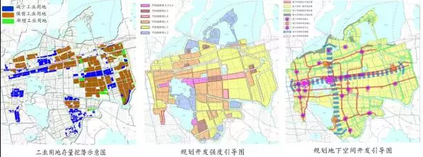
- 园区功能优化布局图
- 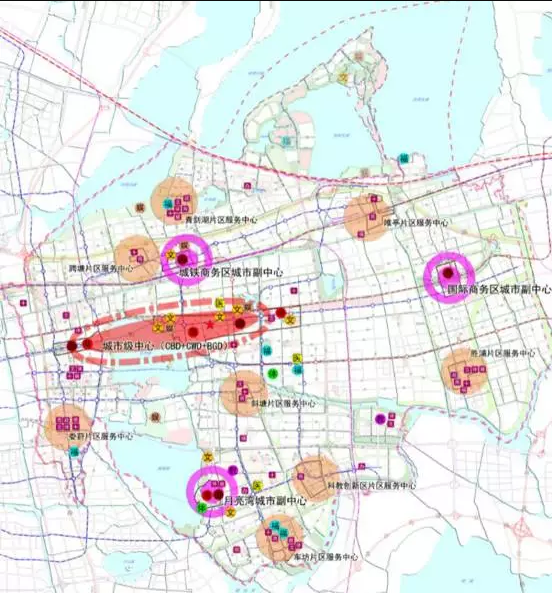
- 公交优先引导空间结构优化图
- 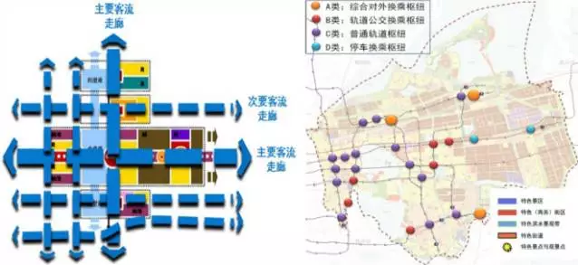
- 两种发展模式下交通发展模式测试
- 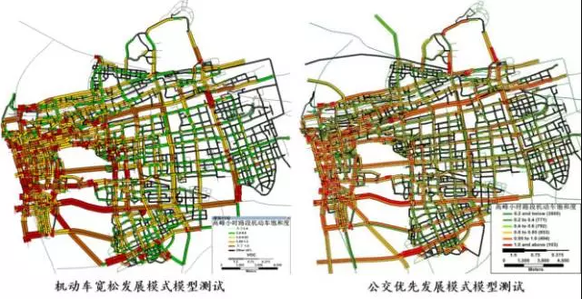
- 路网体系引导模式级配优化图
- 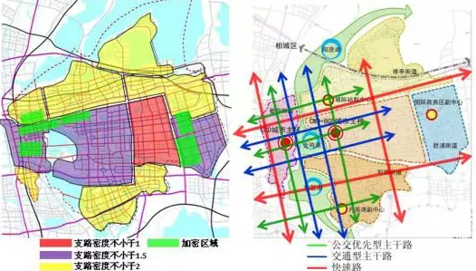
- 工业用地综合效益分析示意
- 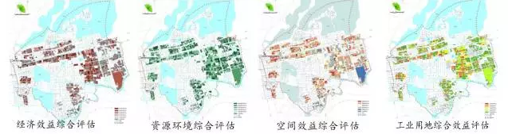
- 人口与空间趋势演化分析
- 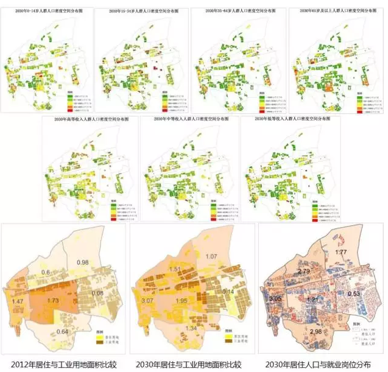
规划细节
- 一、 规划范围与期限
- 本规划范围为苏州工业园区行政辖区，土地面积278平方公里。
- 本规划期限为2012—2030年
- 近期：2012—2020年
- 远期：2021—2030年
- 二、功能定位
- 国际领先的高科技园区
- 国家开放创新试验区、
- 苏东部国际商务中心
- 苏州现代化生态宜居城区
- 三、总体目标
- 探索转型升级、内涵发展的新路径，建设经济、管理、文化、社会、生态发展水平全面协调现代化的新城区。
- 至2020年，优化提升既有基础，发掘存量资源潜力，积累自主创新资本，稳中求进，为苏南现代化示范区建设先导先行。力争全面达到国际先进水平，其中，生态建设等部分指标达到国际领先水平。
- 至2030年，主要发展指标全面达到国际领先水平，建成产业高端、文化繁荣、居民富足、环境优美的现代化新城区。
- 三、规划理念
- 1、效率引领
- 以产业门类和层次优化促进产业效率提升。通过工业门类的调整、产业环节 的优化提升等途径，切实提升园区工业的附加值率。以用地功能和强度调整促进空间效率提升。通过工业用地的退二进三、提升公交走廊沿线用地的开发强度等途径，有效提升园区土地利用的效率。以公交优先和交通引导促进交通效率提升。通过公交优先发展、交通与空间布局的有效互动等途径，促进园区交通发展效率的提升。
- 2、低碳引导
- 资源约束引导产业结构升级。立足园区资源实际，增强自主创新能力，促进 发展方式转变，优化产业结构，实现现代服务业和先进制造业的协调发展。生态约束引导宜居环境打造。加强园区河、湖等生态敏感空间的严格保护和合理利用，提升人居环境质量，彰显城市魅力。能源约束引导节能减排落实。鼓励节能技术的开发与应用，提高资源使用效率，减少污染物排放；构建绿色交通体系，合理配置产业用地和生活用地，促进机动交通出行减量。
- 3、协调提升
- 以功能整合和空间协调促进内外协调发展。从发展层次、建设规模等角度加强对园区的区域功能载体整合，注重与周边区域空间发展协调。以一体构建和服务均等推动分区协调发展。从设施分布、建设标准等角度推进园区均等化发展，促进发展成果的普惠和共享。
- 1、效率引领
- 四、城区规模
- 人口规模
- 至2020年，常住总人口为115万人
- 至2030年，常住总人口为135万人
- 用地规模
- 至2020年，城市建设用地规模为159.2平方公里，人均城市建设用地约138.5平方米
- 至2030年，城市建设用地规模为165.1平方公里，人均城市建设用地约122.3平方米。
- 人口规模
- 五、空间布局
- 1、布局结构
- 规划形成 双核多心十字轴、四片多区异彩呈 的空间结构。
- 双核：湖西CBD、湖东CWD围绕金鸡湖合力发展，形成园区城市核心区。
- 多心：结合城际轨道站点、城市轨道站点、功能区中心形成三副多点的中心空间。
- 十字轴：结合各功能片区中心分布，沿东西向城市轨道线和南北向城市公交走廊，形成十字型发展轴，加强周边地区与中心区的联系
- 四片多区：包括娄葑、斜塘、胜浦和唯亭街道四片，每片结合功能又划分为若干片区。
- 规划形成 双核多心十字轴、四片多区异彩呈 的空间结构。
- 2、中心体系规划
- 两主、三副、八心、多点 的中心体系结构。
- 两主，即两个城市级中心，包括
- 苏州市中央商务区=
CBD - 苏州东部新城中央商业文化区=
CWD - 白塘生态综合功能区=
BGD
- 苏州市中央商务区=
- 三副，即三个城市级副中心
- 城铁综合商务区
- 月亮湾商务区
- 国际商务区
- 八心，即八个片区中心
- 两主，即两个城市级中心，包括
- 两主、三副、八心、多点 的中心体系结构。
- 1、布局结构